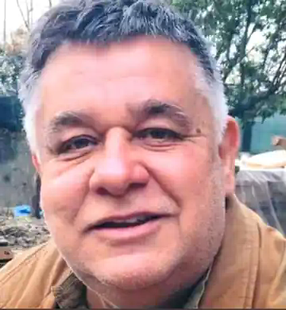
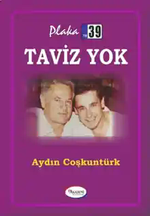
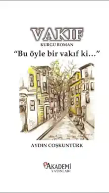

Arşiv ve detaylar
Projeler, kitaplar, yazılar ve besteler için açılan detay sayfası. Yeni dökümanlar geldikçe içerikler burada genişletilecek.

Aydın Coşkuntürk
6 Ağustos 1962’de İstanbul’da doğdu; Kırklareli kökenlidir. Kırklareli Atatürk Lisesi yıllarında toplumsal ve siyasal meselelerle ilgilenmeye başladı. 12 Eylül 1980 sonrasında İstanbul’a yerleşti.
Yıllar içinde yazı, medya, girişimcilik, mimarlık ve proje geliştirme alanlarında üretim yaptı. Yazılı ve görsel basındaki çalışmaları, köşe yazıları, kitapları ve geliştirdiği projelerle farklı alanlarda faaliyet gösterdi.
Hayat, toplum, siyaset, insan ilişkileri ve değerler üzerine düşüncelerini kişisel deneyimlerinden hareketle yazıya ve projelere dönüştürmektedir.
N Haber Medya
Haber, yayıncılık, içerik ve iletişim alanındaki çalışmalar için oluşturulan proje başlığıdır. Aydın Coşkuntürk’ün profilinde medya ve yayıncılık faaliyetleri öne çıkan çalışma alanlarından biri olarak yer alıyor.
A&C Mimarlık
Mimarlık, uygulama ve mekân geliştirme alanındaki çalışmaların yer aldığı bölüm. Projeler daha sonra fotoğraf galerileri, proje künyeleri, lokasyon ve uygulama bilgileriyle ayrı ayrı açılabilecek.
Markalı Çözümler
Marka, girişim, fikir geliştirme ve yeni iş modelleri üzerine yapılan çalışmalar için hazırlanan bölüm. Fikir aşamasından uygulamaya uzanan projeler burada toplu bir arşiv olarak sunulabilir.

Taviz Yok
Taviz Yok, Aydın Coşkuntürk’ün hayata ve siyasete bakışını bizzat yaşadığı olaylar üzerinden bir araya getirdiği ilk kitabı olarak tanıtılıyor.
Kitabın önsözünde yazarın İstanbul ve Kırklareli bağlantısı, lise yıllarında siyasetle tanışması, 1980 sonrasında İstanbul’a yerleşmesi ve yazılı-görsel basındaki çalışmaları anlatılıyor.
Eserin omurgasını kişisel deneyimler, ilkeler, hayatın içinden gözlemler ve toplumsal değerlendirmeler oluşturuyor.

Vakıf
Vakıf, kapağında “Bu öyle bir vakıf ki...” ifadesi bulunan Aydın Coşkuntürk imzalı kurgu romandır.
Kitap, sosyal medya paylaşımında yayımlanmış eserlerinden biri olarak tanıtılıyor. Kapak görseli, eski İstanbul sokağını çağrıştıran çizgisel bir kent illüstrasyonuna sahip.
Siyasetin de Bir Ahlakı Var!
Aydın Coşkuntürk’ün sosyal medya profilinde görünen yazı başlıklarından biridir. Toplum, siyaset, ahlak ve kamusal sorumluluk ekseninde bir değerlendirme olarak arşive alınmıştır.
Asıl Patron Kim
Yönetim, halk ve kamusal sorumluluk üzerine yayımlanan kısa bir düşünce metni. Paylaşımdaki temel soru, yönetimin halk olmadan anlam taşıyıp taşımadığı üzerinden kuruluyor.
Yazı Arşivi
Köşe yazıları ve diğer metinler geldikçe yıl, konu ve yayın mecrasına göre listelenebilir. Her yazı ayrı bir okuma ekranında açılacak şekilde yapı hazırdır.
Aydın Coşkuntürk Besteleri
Beste adları, söz ve müzik bilgileri ile ses kayıtları için ayrılmış arşiv bölümü. Ses dosyaları geldiğinde site içinden doğrudan dinlenebilecek bir oynatıcı eklenecek.